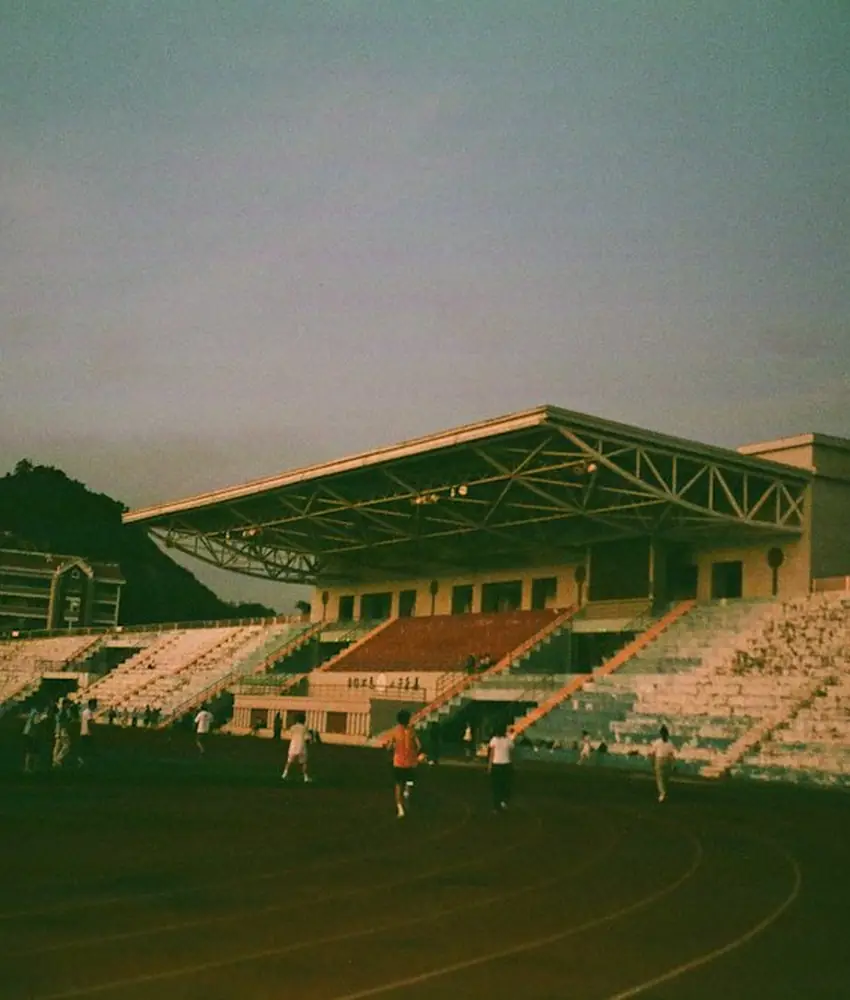
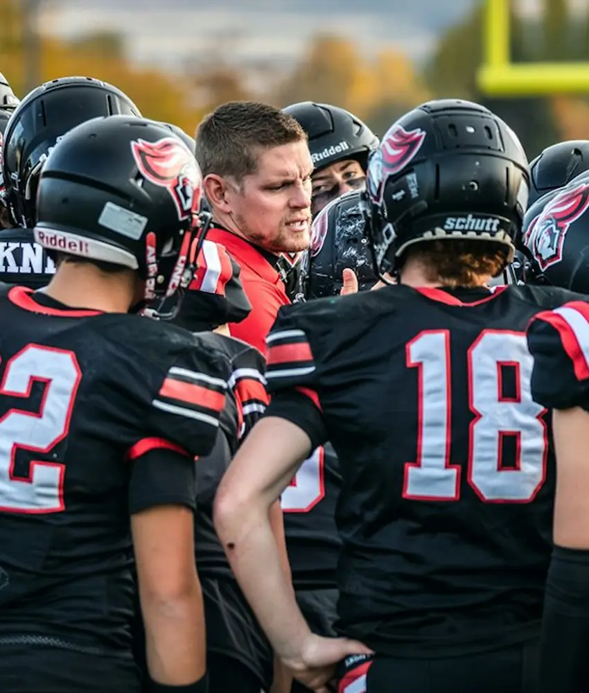
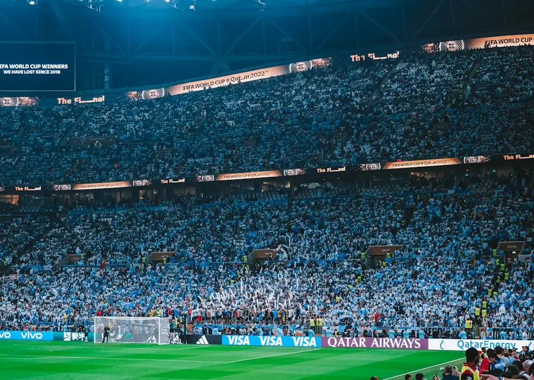
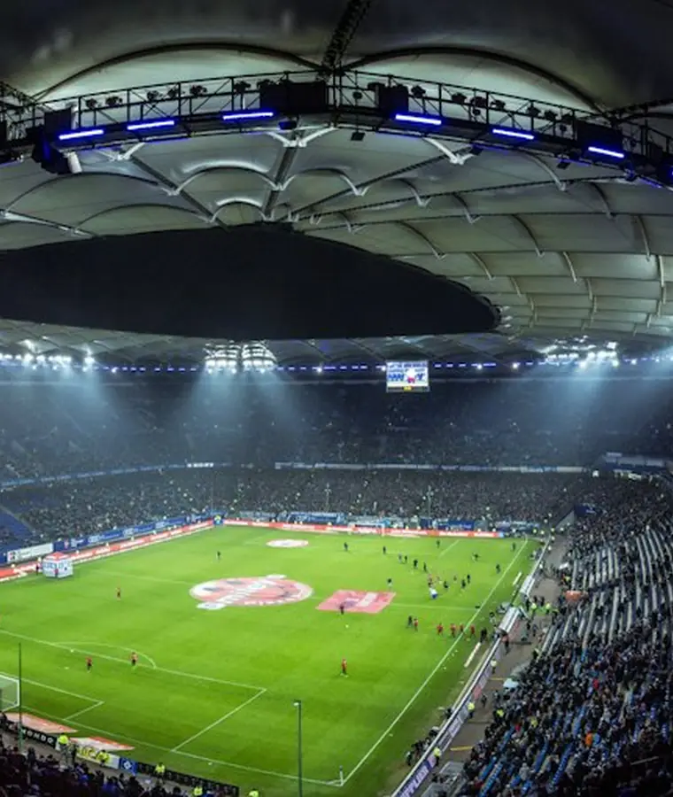

01
Tournament planning
Leagues, cups, group stages, and knockouts with registration windows, approval flows, and automatic seeding.
Plan a tournamentWhat Stackly does
Eight connected services that turn tournament chaos into a clear, repeatable game day — whether you run a school league or a national cup.
The full service list
Switch on only what you need today, and add the rest as your competition grows.
Leagues, cups, group stages, and knockouts with registration windows, approval flows, and automatic seeding.
Plan a tournament
One-tap score and event logging for officials, with instant updates for every fan following along.
See the score center
Capacity, equipment, and availability checks in one view, with clash detection before anything is confirmed.
Browse fixturesGuided onboarding, medical details, emergency contacts, and availability — all in a single roster view.
Explore team toolsPlayer form, team momentum, and season-long records that help coaches make the next call with confidence.
View standings
Attendance, finances, and participation trends exported in the format your board or sponsor expects.
Ask for a report sample
Highlight-ready assets, clean score graphics, and shareable recaps for every single match.
Request media kit
Registration portals, notifications, and a public match hub that keeps supporters genuinely engaged.
Talk about your audience
Lineup sheets, availability, and role-based permissions so managers only see what they need.
Preview the workspaceHow it comes together
No six-month implementation project. Most organisers are running their first Stackly competition within a week.

Pick a template or build your own rules, entry limits, and division structure.

Registration portals collect rosters, documents, and payments without chasing email threads.

Fixtures, heat sheets, and venue assignments go out to every role in a single click.

Officials log events, fans follow live, and you get the recap before you leave the venue.

Results, standings, and highlight-ready summaries go out the moment the final whistle blows.

Records, medals, and a shareable wrap-up make the next edition easy to relaunch.
Straightforward pricing
Every plan includes unlimited teams, the full match center, and local image storage so nothing breaks on game day.
Admins, managers, officials, and volunteers with scoped permissions.
The full match center with live updates and season-long tables.
Real people on email, plus onboarding help for your first competition.
